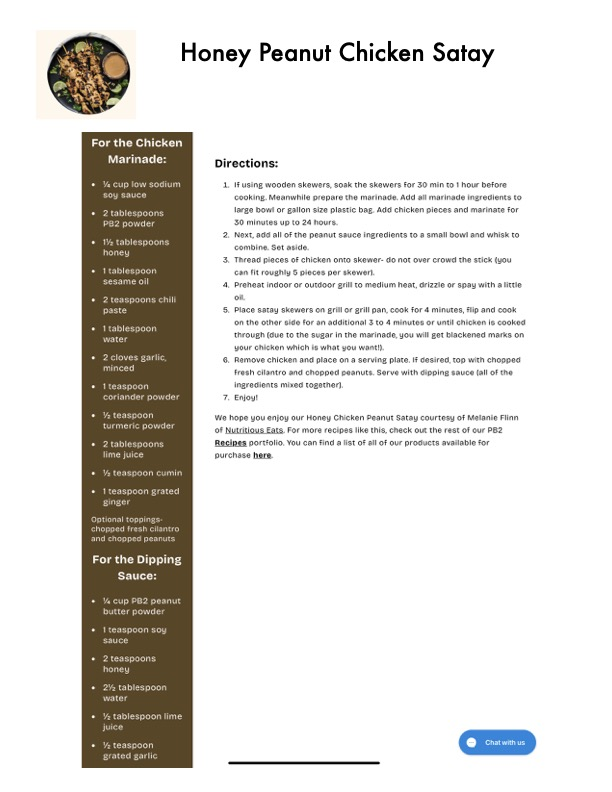

Honey Peanut Chicken Satay

Original cookbook page 787
Ingredients
- 2 tablespoons large bowl or gallon size plastic bag. Add chicken pieces and marinate for
- 1 tablespoon can fit roughly 5 pieces per skewer).
- 2 teaspoons chili oil.
- 1 tablespoon . .
- 2 cloves garlic, 6. Remove chicken and place ona serving plate. If desired, top with chopped
- 1 teaspoon ingredients mixed together).
- 2 tablespoons Recipes portfolio. You can find a list of all of our products available for
- 1 teaspoon grated
- 1 teaspoon soy
- 2 teaspoons
Instructions
- Next, add all of the peanut sauce ingredients to a small bowl and whisk to 1% tablespoons
- Thread pieces of chicken onto skewer- do not over crowd the stick (you 1 tablespoon can fit roughly 5 pieces per skewer).
Recipe #787 from collection